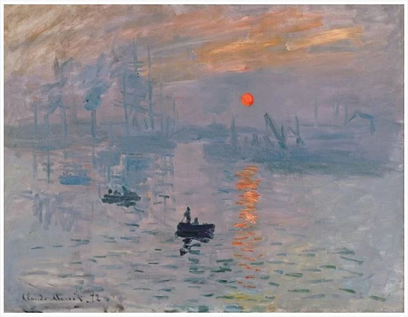
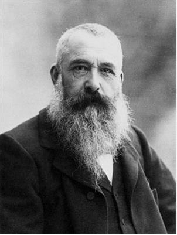
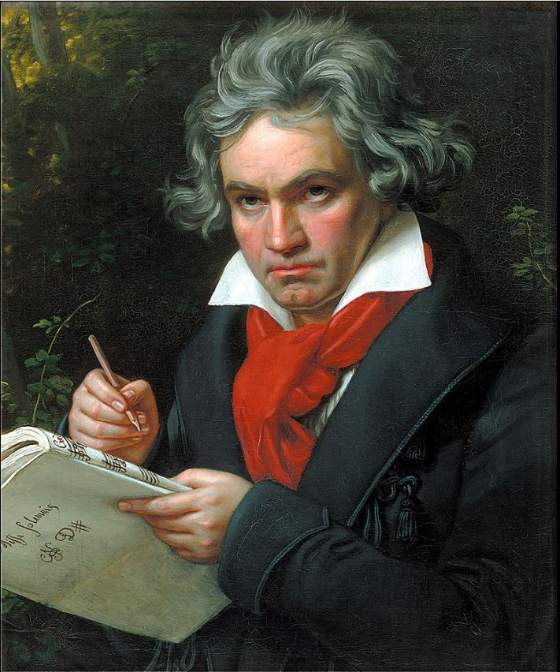
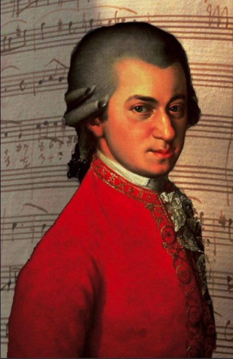

My Favourite Artists
My Favourite Books
Claude Monet
Claude Monet was a key figure in the Impressionist movement that transformed French painting in the second half of the nineteenth century. Throughout his long career, Monet consistently depicted the landscape and leisure activities of Paris and its environs as well as the Normandy coast.


Edouard Manet
Top Picks:
- Olympia, 1863
- Bullfight, 1865-1866
Beethoven
Beethoven remains one of the most admired composers in the history of Western music; his works rank amongst the most performed of the classical music repertoire and span the transition from the Classical period to the Romantic era in classical music.
Wolfgang Mozart
Favourite Piece:
- Sonata No. 16 in C major, K. 545
Gogh
Top Picks:- Starry Night
- Sunflowers